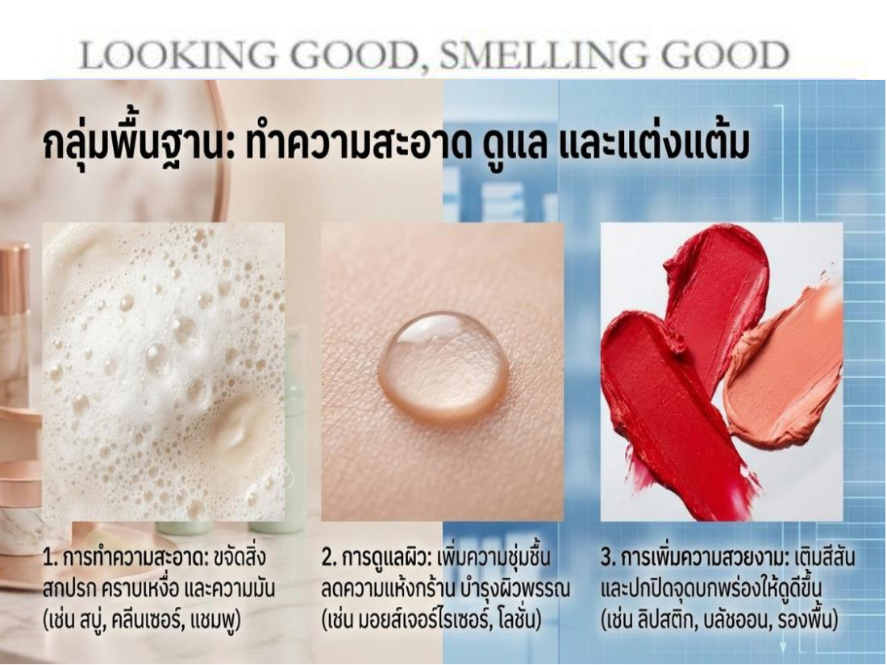
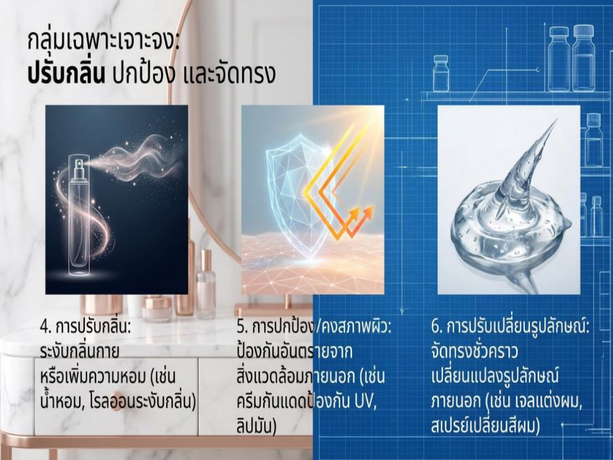
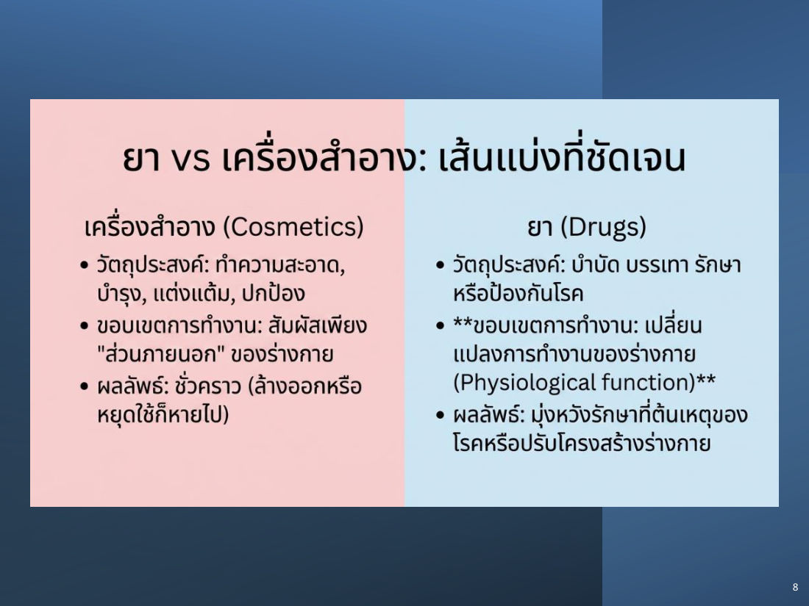
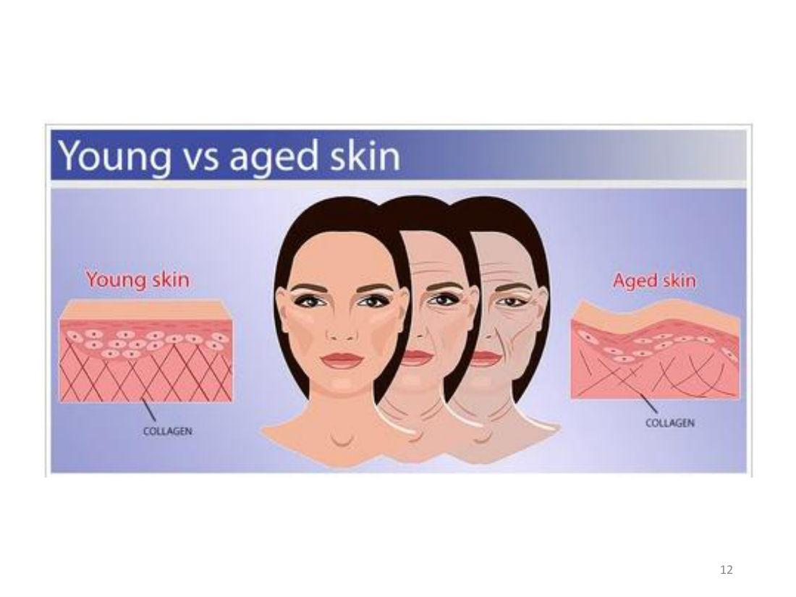
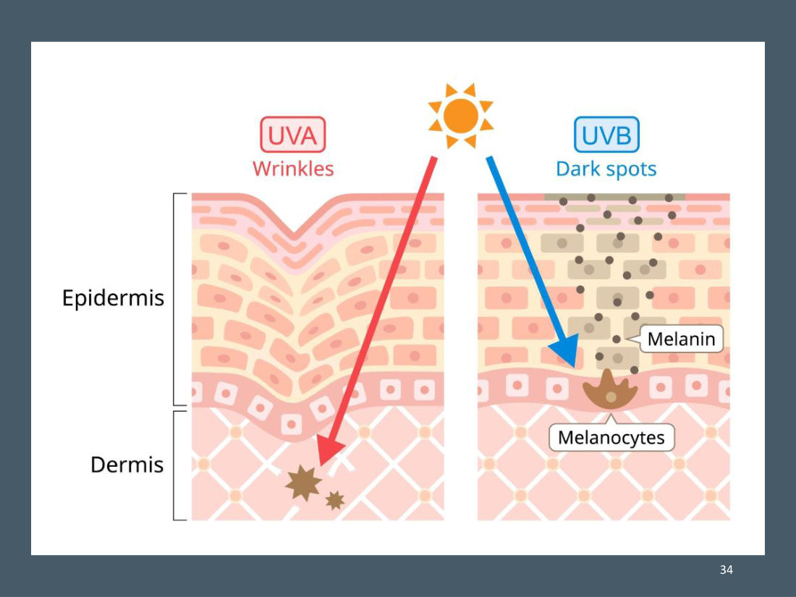
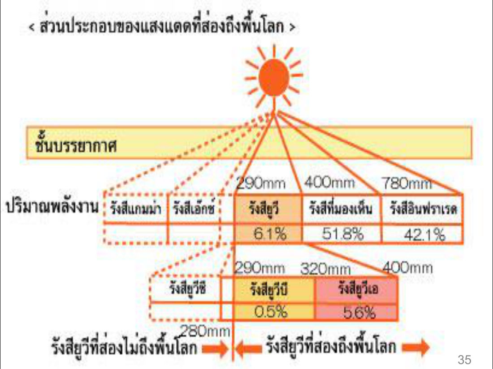

บทนี้เรียนว่า "เครื่องสำอาง" ตามกฎหมายคืออะไร ต่างจากยาอย่างไร แบ่งกี่ประเภท ผิวหนังมีกี่ชั้น รังสี UV ทำอะไรกับผิว สารแต่ละตัวในเครื่องสำอางทำหน้าที่อะไร และสารห้ามใช้อันตรายอย่างไร
ในข้อสอบฝึก บทนี้ออก 18 ข้อ (ข้อ 1–18) เน้น: นิยาม, 3 ประเภทตาม พ.ร.บ., ชั้นผิว, UVA/UVB/UVC, SPF, สารทำให้ผิวขาว, สารห้ามใช้ 4 ตัว
1. เครื่องสำอางคืออะไร
แนวคิดเปิดบท: สุขภาพกายและใจที่สมบูรณ์ ส่งผลต่ออารมณ์และความสมดุลของร่างกาย แล้ว "สะท้อนออกมา" เป็นผิวพรรณที่สดใส เปล่งปลั่ง
เครื่องสำอาง = ผลิตภัณฑ์ที่ใช้ เฉพาะกับผิวภายนอกเท่านั้น เช่น ผิวหนัง ริมฝีปาก ในช่องปาก เส้นผม เล็บ และอวัยวะเพศส่วนนอก
- ใช้ปรับแต่งให้ดูดี โดย ไม่มีผลต่อโครงสร้างหรือการทำหน้าที่ของร่างกาย
- ใช้ระงับกลิ่นกาย แต่งกลิ่นหอม
- ใช้ทำความสะอาดในชีวิตประจำวัน เช่น ขจัดเหงื่อไคล สิ่งสกปรก
หน้าที่ของเครื่องสำอาง 6 กลุ่ม ("Looking good, smelling good")
| กลุ่ม | หน้าที่ | ตัวอย่าง |
|---|---|---|
| พื้นฐาน | 1. ทำความสะอาด — ขจัดสิ่งสกปรก คราบเหงื่อ ความมัน | สบู่ คลีนเซอร์ แชมพู |
| พื้นฐาน | 2. ดูแลผิว — เพิ่มความชุ่มชื้น ลดความแห้ง บำรุง | มอยส์เจอไรเซอร์ โลชั่น |
| พื้นฐาน | 3. เพิ่มความสวยงาม — เติมสีสัน ปกปิดจุดบกพร่อง | ลิปสติก บลัชออน รองพื้น |
| เฉพาะเจาะจง | 4. ปรับกลิ่น — ระงับกลิ่นกาย เพิ่มความหอม | น้ำหอม โรลออน |
| เฉพาะเจาะจง | 5. ปกป้อง/คงสภาพผิว — ป้องกันอันตรายจากภายนอก | ครีมกันแดด ลิปมัน |
| เฉพาะเจาะจง | 6. ปรับเปลี่ยนรูปลักษณ์ชั่วคราว | เจลแต่งผม สเปรย์เปลี่ยนสีผม |


2. ผลิตภัณฑ์ที่ "มิใช่" เครื่องสำอาง
ถ้าผลิตภัณฑ์ทำอย่างใดอย่างหนึ่งนี้ → ไม่ใช่เครื่องสำอาง (เป็นยา/หัตถการ):
- ใช้ ป้องกัน บำบัด บรรเทา รักษาโรค
- มีผลต่อโครงสร้าง หรือการทำหน้าที่ของร่างกาย (ตัวอย่างในสไลด์: ฉีดฟิลเลอร์, ฉีดโบท็อกซ์)
"เครื่องสำอาง ไม่ใช่ ยา" (Cosmetics are not drugs) — ไม่ว่าแบรนด์จะใช้คำว่า Cosmeceuticals หรือมีสารออกฤทธิ์ (Active Ingredients) เข้มข้นแค่ไหน ตามกฎหมายและชีววิทยา เครื่องสำอางทำหน้าที่แทนยาไม่ได้
| เครื่องสำอาง (Cosmetics) | ยา (Drugs) | |
|---|---|---|
| วัตถุประสงค์ | ทำความสะอาด บำรุง แต่งแต้ม ปกป้อง | บำบัด บรรเทา รักษา หรือป้องกันโรค |
| ขอบเขตการทำงาน | สัมผัสเพียง ส่วนภายนอก ของร่างกาย | เปลี่ยนแปลงการทำงานของร่างกาย (physiological function) |
| ผลลัพธ์ | ชั่วคราว — ล้างออกหรือหยุดใช้ก็หายไป | มุ่งรักษาที่ต้นเหตุของโรค หรือปรับโครงสร้างร่างกาย |

⚠️ มักออกสอบ: ตัวเลือกที่มีคำว่า "รักษาโรค" หรือ "มีผลต่อโครงสร้าง/การทำหน้าที่ของร่างกาย" = ไม่ใช่เครื่องสำอาง
3. ผิวหนัง (skin) 3 ชั้น
หน้าที่หลักของผิวหนัง: ป้องกันสิ่งรบกวนจากภายนอก และคุ้มครองอวัยวะภายใน
| ชั้น | ประกอบด้วย / ลักษณะ | จุดที่ต้องจำ |
|---|---|---|
| 1. หนังกำพร้า (หนังชั้นนอก) | ปกคลุมด้วยเหงื่อและไขมันจากต่อมไขมัน/ต่อมเหงื่อ มีสภาพ เป็นกรดอ่อน ๆ | กรดอ่อน ๆ ช่วย ต้านทานเชื้อโรค — ถ้าผิวเริ่มเป็น ด่าง เชื้อโรคจะแพร่ง่ายขึ้น ภูมิต้านทานผิวลดลง |
| 2. หนังแท้ (หนังชั้นใน) | เส้นเลือด ต่อมไขมัน ต่อมเหงื่อ ต่อมน้ำเหลือง รากขน ทางผ่านเส้นประสาท มี น้ำ เป็นส่วนประกอบมาก | คอลลาเจน (collagen) เป็นส่วนประกอบใหญ่ = เส้นใยโปรตีนเรียงขนาน รักษาสมดุลแรงยืดกล้ามเนื้อ ถ้าน้ำลดลงหรือคอลลาเจนเสื่อม → เกิด ฝ้า |
| 3. ชั้นใต้ผิวหนัง | ไฟเบอร์ (fiber) + ไขมัน (เรียก "ไขมันชั้นใต้ผิวหนัง") | สร้าง ส่วนโค้งเว้า ของร่างกาย + เป็น หมอนรองรับแรงกระเทือน ต่อกระดูก กล้ามเนื้อ เส้นเอ็น เมื่อขาดอาหาร ไขมันจะเปลี่ยนเป็นสารอาหารเข้ากระแสเลือด ปริมาณเปลี่ยนตามวัยและฤดูกาล |
💡 จำง่าย: กำพร้า = กรด (กันเชื้อ) · แท้ = คอลลาเจน (ความยืดหยุ่น) · ใต้ผิว = ไขมัน (หมอน + ส่วนโค้ง)

4. การเสื่อมสภาพของผิว (skin aging)
| ชนิด | สาเหตุ | แก้ไขได้ไหม |
|---|---|---|
| ปัจจัยภายใน (endogenous skin aging) | พันธุกรรม เหมือนอวัยวะอื่น ๆ | แก้ไขไม่ได้ |
| จากแสงแดด (photoaging) | แสงแดด ทำให้ผิว ดูแก่ก่อนวัย ต่างจากผิวเสื่อมตามธรรมชาติอย่างเด่นชัด | เพราะ ร่างกายซ่อมแซมไม่ได้ → ต้องป้องกัน |
5. รังสี UV 3 ชนิด (แบ่งตามความยาวคลื่น)
รังสี UV = คลื่นความถี่สั้น พลังงานมากที่สุด ในบรรดารังสีจากดวงอาทิตย์ที่ถึงพื้นโลก UVA และ UVB ส่องถึงพื้นโลกได้ และมีแนวโน้มเพิ่มขึ้นเพราะชั้นบรรยากาศถูกทำลาย
| รังสี | ลักษณะ | ผลต่อผิว |
|---|---|---|
| UVA | คลื่น ยาว พลังงาน ต่ำ พบในชีวิตประจำวัน ลอดผ่านกระจกและเมฆ เข้าถึงชั้นผิวลึก | ผิว สีแทน/คล้ำแดง, เร่งการชราภาพ (aging), รอยเหี่ยวย่น ผิวหย่อนยาน, เพิ่มความเสี่ยงมะเร็งผิวหนังและ ต้อกระจก |
| UVB | คลื่น สั้น พลังงาน สูง พบมากในที่เที่ยวกลางแจ้ง | ผิว ไหม้ บวมแดง คล้ำแดด, ทำลาย DNA ของเซลล์ผิว → มะเร็งผิวหนัง หลายชนิด |
| UVC | ถูกชั้นบรรยากาศกรอง ส่องถึงพื้นโลกน้อยมาก | ไม่มีผลมากนัก |
💡 จำ: A = Aging (แก่ เหี่ยว แทน) · B = Burn (ไหม้ มะเร็ง ทำลาย DNA) · C = Cut off (บรรยากาศกรองไว้)

ส่วนประกอบแสงแดดที่ถึงพื้นโลก: รังสียูวี 6.1% · แสงที่มองเห็น 51.8% · อินฟราเรด 42.1% (ในส่วนยูวี: UVB 0.5%, UVA 5.6%; UVC < 280 nm ส่องไม่ถึงพื้นโลก)

6. ความหมายตาม พ.ร.บ.เครื่องสำอาง พ.ศ. 2535 (มาตรา 4)
- วัตถุที่มุ่งหมายใช้ ทา ถู นวด โรย พ่น หยอด ใส่ อบ หรือวิธีอื่นต่อส่วนของร่างกาย เพื่อ ความสะอาด ความสวยงาม หรือส่งเสริมความสวยงาม รวมเครื่องประทินผิว — แต่ไม่รวมเครื่องประดับและเครื่องแต่งตัว ที่เป็นอุปกรณ์ภายนอกร่างกาย
- วัตถุที่ใช้เป็น ส่วนผสมในการผลิตเครื่องสำอาง โดยเฉพาะ
- วัตถุอื่นที่ กฎกระทรวง กำหนดให้เป็นเครื่องสำอาง
สรุปคุณสมบัติเครื่องสำอาง 4 ข้อ: (1) ใช้เฉพาะผิวกายภายนอก (2) ใช้ทำความสะอาด (3) ระงับกลิ่นกาย แต่งกลิ่นหอม (4) ปกป้อง/ส่งเสริมสุขภาพดี ปรับแต่งให้ดูดี โดยไม่มีผลต่อโครงสร้างหรือการทำหน้าที่ของร่างกาย
7. ประเภทของเครื่องสำอาง (พ.ร.บ. 2535) — 3 ประเภท
| ประเภท | ความเสี่ยง / การควบคุม | ตัวอย่าง |
|---|---|---|
| 1. ควบคุมพิเศษ | เสี่ยง สูงสุด (เคมีในส่วนผสมมีพิษภัย) ควบคุมเข้มงวดที่สุด ต้องขึ้นทะเบียนตำรับ | ยาสีฟัน, น้ำยาบ้วนปาก, น้ำยาย้อมผม, น้ำยาฟอกสีผม, น้ำยาทำให้ผมดำ |
| 2. ควบคุม | เสี่ยงบ้าง แต่น้อยกว่าควบคุมพิเศษ | ดูตารางย่อยด้านล่าง |
| 3. ทั่วไป | ไม่มีสารควบคุมพิเศษหรือสารควบคุม | แชมพู/ครีมนวดที่ ไม่มีสารขจัดรังแค, โลชั่น, ครีมบำรุง, อายแชโดว์, อายไลเนอร์, ดินสอเขียนคิ้ว, บลัชออน, ลิปสติก, ครีมรองพื้น, แป้งทาหน้า, สบู่ก้อน, สบู่เหลว, โฟม, น้ำมันทาผิว, ระงับกลิ่นกาย, สีทาเล็บ, มูส/เจลแต่งผม |
เครื่องสำอางควบคุม แบ่ง 2 แบบ
- 2.1 กำหนดตามชนิดผลิตภัณฑ์ 4 ประเภท: (1) ผ้าอนามัย ทั้งแผ่นและแบบสอด (2) ผ้าเย็น/กระดาษเย็นในภาชนะปิด (3) แป้งฝุ่นโรยตัว (4) แป้งน้ำ
- 2.2 กำหนดตามสารควบคุม (มีสารเหล่านี้ = ควบคุม): (1) สารป้องกันแสงแดด 19 ชนิด ตามบัญชีแนบท้ายประกาศกระทรวงสาธารณสุข (2) สารขจัดรังแค ซิงก์ไพริไทโอน และไพรอกโทนโอลามีน (3) สารขจัดรังแค คลิมบาโซล
⚠️ กับดักที่พบบ่อย: ยาสีฟัน = ควบคุมพิเศษ (ไม่ใช่ควบคุม) · แป้งฝุ่นโรยตัว/ผ้าอนามัย = ควบคุม · ลิปสติก/สบู่ก้อน = ทั่วไป · แชมพู "มีสารขจัดรังแค" = ควบคุม แต่ "ไม่มี" = ทั่วไป
8. ส่วนประกอบและหน้าที่ในผลิตภัณฑ์เครื่องสำอาง
สารสำคัญ (Active Ingredient) = สารออกฤทธิ์ที่ทำให้เกิดสรรพคุณ ได้แก่ (1) สารควบคุมพิเศษ ในเครื่องสำอางควบคุมพิเศษ (2) สารควบคุม ในเครื่องสำอางควบคุม (3) สารส่วนประกอบสำคัญที่แจ้งชื่อและปริมาณไว้ต่อเจ้าหน้าที่ หรือระบุบนฉลาก
| สาร | หน้าที่ / คุณสมบัติ |
|---|---|
| Emollient (สารหล่อลื่น ให้ความชุ่มชื้น) | เป็น ฟิล์มเคลือบผิว เก็บน้ำไว้กับผิว (ป้องกันน้ำออก) · คือน้ำมันทั้งหลาย ทั้งสังเคราะห์และธรรมชาติ |
| Silicone-based Oil | คล้ายน้ำมันทั่วไป · คุณสมบัติเหมือน Emollient แต่เกิดจากการสังเคราะห์ |
| Astringent (สารฝาดสมาน) | ตกตะกอนโปรตีน ช่วยชำระโปรตีนและสิ่งระคายเคืองออก · ผิวสดชื่น ลดระคายเคือง ช่วยสมานแผลเล็ก ๆ · รู้สึก กระชับ ตึง |
| Exfoliants (สารทำให้เกิดการลอก) = AHA, BHA | กรดอ่อน ๆ ทำให้เซลล์ผิวชั้นนอก ยุ่ย อ่อนตัว หลุดลอก กระตุ้นผิวใหม่ · ดึงน้ำไว้กับผิว จึงให้ความชุ่มชื้นได้ |
| Preservatives (สารกันเสีย) | ลดการเจริญเติบโตของแบคทีเรียที่ทำให้ผลิตภัณฑ์เสื่อม · เป็นสารที่ทำให้แพ้ได้ง่ายพอควร |
| Humectants (สารให้ความชุ่มชื้น) | คล้าย Emollient แต่ ดึงดูดน้ำเข้าสู่ผิว (Emollient = กันน้ำออก) · ถูกล้างออกง่ายมาก |
| Surfactants (สารลดแรงตึงผิว / ชำระล้าง) | ล้างสิ่งสกปรกและน้ำมันที่น้ำล้างไม่ออก · ทำให้เกิดฟอง · ทำให้น้ำกับน้ำมันเข้ากัน |
| Quaternary Ammonium Compound | เป็น Surfactant ชนิดหนึ่ง · ฆ่าเชื้อ / สารกันบูด · ทำให้เกิด Emulsion |
⚠️ Emollient vs Humectant: Emollient = "ฝาปิด" กันน้ำระเหยออก · Humectant = "แม่เหล็ก" ดึงน้ำเข้าผิว (แต่ล้างออกง่าย)
9. สารกันแดด (Sunscreen Agent) และ SPF
| ประเภท | กลไก | ตัวอย่างสาร |
|---|---|---|
| Chemical | ดูดซับ UV ก่อนถึงผิว | PABA (para-aminobenzoic acid), PABA ester, benzophenone, cinnamates, salicylates |
| Physical | สารทึบแสง ทั้ง ดูดซับและสะท้อน UV ออกจากผิว | titanium dioxide, zinc oxide |
SPF (Sun Protecting Factor) = อัตราส่วนระหว่าง พลังงาน UV ที่ทำให้ผิวที่ทาครีมกันแดดเริ่มแดง ต่อ พลังงาน UV ที่ทำให้ผิวที่ไม่ได้ทาเริ่มแดง
- ตัวอย่าง: SPF 10 = ป้องกันผิวได้นานเป็น 10 เท่า เมื่อเทียบกับผิวที่ไม่ได้ทา (SPF 15 ก็ = 15 เท่า)
ปัจจัยในการเลือก SPF (6 ข้อ)
- ชนิดผิวของผู้ใช้ หรือการมีโรคผิวหนัง
- ปริมาณรังสีในแต่ละพื้นที่และฤดูกาล
- ชนิดสารกันแดด — ควรกันได้ ทั้ง UVA และ UVB
- ความปลอดภัยของสารกันแดด
- ความติดทน — ประสิทธิภาพลดเมื่อโดนน้ำ ควรใช้ water resistant / water proof
- ให้เหมาะกับการแต่งหน้า
⚠️ "ราคาแพงที่สุด" ไม่ใช่ ปัจจัยในสไลด์
10. สารทำให้ผิวขาว (Whitening agent) และ AHA
หลักการ = รบกวนกระบวนการสร้างเม็ดสี (เมลานิน) ทำได้ 3 ทาง:
- ทำลาย/ลดการทำงานของ เมลาโนไซต์ → สร้างเม็ดสีลดลง
- ยับยั้งการสร้าง melanosomes (ส่วนในเมลาโนไซต์ที่สร้างเมลานิน) และทำให้โครงสร้างเปลี่ยนรูป
- ยับยั้งการสังเคราะห์เอนไซม์ tyrosinase ในขั้นตอนสร้างเมลานิน
AHA (Alpha Hydroxy Acid) = "กรดผลไม้" นิยมผสมมาก ทั้งที่ยังไม่แน่ใจประสิทธิภาพจริง
- ผู้ใช้จะ ไวต่อแสงแดดมากขึ้น
- วัตถุประสงค์: ลบริ้วรอย ปรับสภาพผิว ทำความสะอาด ลดสิว
11. สารห้ามใช้ในเครื่องสำอาง
แบ่ง 2 ประเภท
- ห้ามใช้โดยสิ้นเชิง ไม่มีข้อยกเว้น — พบแม้เล็กน้อยก็ผิดกฎหมายทันที
- ห้ามใช้แต่มีข้อยกเว้น — ปนเปื้อนได้เล็กน้อย หรือใช้ได้ตามเงื่อนไข เช่น ตะกั่ว และสารประกอบ, ปรอท และสารประกอบ
สารห้ามใช้ที่ตรวจพบบ่อย 4 ตัว ⭐
| สาร | อันตราย (คำสำคัญที่ออกสอบ) |
|---|---|
| ไฮโดรควิโนน (Hydroquinone) | เคยใช้เป็นยารักษาฝ้า แต่ทำให้ผิวอักเสบ จึงถูกเพิกถอนจากยา · ในเครื่องสำอาง: แพ้ ระคายเคือง จุดด่างขาว, ผิวหน้าดำเป็น ฝ้าถาวร รักษาไม่หาย (ทาแล้วผิวคล้ำขึ้น) |
| ปรอทแอมโมเนีย (Ammoniated mercury) | แพ้ ผื่นแดง ผิวหน้าดำ ผิวบาง · พิษสะสมของปรอท → ทางเดินปัสสาวะอักเสบ และไตอักเสบ |
| กรดวิตามินเอ (Tretinoin, Retinoic acid) | หน้าแดง แสบร้อนรุนแรง อักเสบ ผิวลอกรุนแรง · อันตรายต่อทารกในครรภ์ → ทารกพิการ |
| สเตียรอยด์ | ใช้เข้มข้น/นานเกิน → โครงสร้างผิวถูกทำลาย ผิวบาง เห็นเส้นเลือด แพ้ง่าย สิวจำนวนมาก (อุดตัน+หนอง) · ระยะยาว เลือดออกในกระเพาะ และ ผู้ป่วยเบาหวานคุมน้ำตาลไม่ได้ |
💡 จำคู่: ไต = ปรอท · ทารกพิการ = กรดวิตามินเอ · ฝ้าถาวร/ด่างขาว = ไฮโดรควิโนน · ผิวบาง+เบาหวาน = สเตียรอยด์
ครีมที่ใช้ตอนแรกผิวขาวจริงแบบซีด ๆ แต่นานไปกลายเป็นด่างขาว ผิวพัง มักมีไฮโดรควิโนนหรือปรอท
12. อันตรายจากเครื่องสำอาง และสาเหตุอาการข้างเคียง
เครื่องสำอางเสี่ยงอันตรายค่อนข้างต่ำ แต่เกิดอาการข้างเคียงได้ ส่วนใหญ่ บริเวณที่สัมผัส: ระคายเคือง คัน แสบร้อน บวมแดง ผื่น ผิวแห้งแตก ลอก ลมพิษ จนถึงแผลพุพอง น้ำเหลืองไหล
สาเหตุ 3 กลุ่ม
| 1. จากตัวผลิตภัณฑ์ | 2. จากการใช้ผิดวิธี | 3. จากตัวผู้บริโภค |
|---|---|---|
| เก่า เสื่อมสภาพ (ผลิตนาน/เก็บไม่ดี) | โรยแป้งฝุ่นลงตัวทารกโดยตรง → ผงแป้งเข้าไปสะสมในปอด | วัย — เด็กและผู้สูงอายุผิวบอบบาง แพ้ง่าย |
| ไม่ปลอดภัย ลักลอบผสมสารห้ามใช้ — สังเกต ฉลากไทยไม่ครบ ไม่มีแหล่งผลิต/วันผลิต | ใช้มากหรือบ่อยเกินไป | ตำแหน่งผิว — หน้า รอบตา ริมฝีปาก บอบบาง |
| สูตร ส่วนประกอบ กรรมวิธีไม่เหมาะสม | ระบุให้ล้างออก แต่ไม่ล้าง | แพ้เฉพาะบุคคล เช่น แพ้น้ำหอม สารกันเสีย |
| เป็นเครื่องสำอางควบคุมพิเศษ มีสารอาจเป็นอันตราย ต้องอ่านฉลาก | ใช้ผิดเวลา เช่น ให้ทาก่อนนอน (กันปฏิกิริยากับแดด) แต่ทากลางวัน | ความประมาท — แชมพูเข้าตา ใช้ร่วมกับผู้อื่นติดเชื้อ แต่งหน้าในรถเกิดอุบัติเหตุ |
| ไม่ปิดภาชนะให้สนิท → ฝุ่น เชื้อโรคปนเปื้อน |
13. ข้อแนะนำการเลือกซื้อและใช้ (8 ข้อ)
- ซื้อจากร้านที่มีหลักแหล่งแน่นอน เชื่อถือได้
- ซื้อที่มี ฉลากภาษาไทย ครบถ้วน ชัดเจน
- ปฏิบัติตามวิธีใช้ และคำเตือนบนฉลากเคร่งครัด
- ใช้ครั้งแรกให้ ทดสอบการแพ้ — ทาเล็กน้อยที่ ท้องแขน ทิ้งไว้ 24–48 ชั่วโมง ไม่ผิดปกติจึงใช้ได้
- ใช้แล้วผิดปกติ หยุดใช้ทันที ถ้าไม่ดีขึ้นให้ปรึกษาแพทย์
- เคยแพ้สารใด ให้ดูส่วนประกอบละเอียดเพื่อหลีกเลี่ยง
- ใช้เสร็จ ปิดฝาให้สนิท
- เก็บในที่ แห้งและเย็น อย่าเก็บในที่ร้อนหรือแดดส่อง
คำศัพท์สำคัญ
| คำศัพท์ | ความหมาย | จำง่าย ๆ ว่า |
|---|---|---|
| Photoaging | ผิวเสื่อมจากแสงแดด แก่ก่อนวัย ร่างกายซ่อมไม่ได้ | photo = แสง |
| Collagen | เส้นใยโปรตีนในหนังแท้ ให้ความยืดหยุ่น | โครงของผิว |
| Emollient | ฟิล์มน้ำมันเคลือบผิว กันน้ำออก | ฝาปิด |
| Humectant | ดึงน้ำเข้าผิว ล้างออกง่าย | แม่เหล็กน้ำ |
| Astringent | ฝาดสมาน ตกตะกอนโปรตีน ผิวตึงกระชับ | โทนเนอร์ |
| Exfoliant (AHA/BHA) | กรดอ่อนผลัดเซลล์ผิว | ผลัดผิว |
| Surfactant | ลดแรงตึงผิว ล้างมัน ทำฟอง | สบู่ |
| Preservative | สารกันเสีย แพ้ได้ง่าย | กันบูด |
| SPF | ค่าเท่าของเวลาป้องกันผิวแดงเทียบกับไม่ทา | SPF 10 = 10 เท่า |
| Melanocyte / Tyrosinase | เซลล์สร้างเม็ดสี / เอนไซม์สร้างเมลานิน | เป้าหมายของสารทำผิวขาว |
สรุปท้ายบท / จุดที่มักออกสอบ
- นิยาม: ใช้ภายนอก เพื่อความสะอาด/สวยงาม ไม่มีผลต่อโครงสร้างร่างกาย · ไม่รวมเครื่องประดับ
- 3 ประเภท: ควบคุมพิเศษ (เสี่ยงสุด, ขึ้นทะเบียนตำรับ, ยาสีฟัน/น้ำยาบ้วนปาก/ย้อมผม/ฟอกสีผม/ผมดำ) → ควบคุม (ผ้าอนามัย ผ้าเย็น แป้งฝุ่น แป้งน้ำ + กันแดด 19 ชนิด + ขจัดรังแค) → ทั่วไป
- ผิว 3 ชั้น: กำพร้า (กรดอ่อน กันเชื้อ) · แท้ (คอลลาเจน, ฝ้า) · ใต้ผิว (ไขมัน หมอนกันกระแทก ส่วนโค้งเว้า)
- UV: A = แทน แก่ เหี่ยว ต้อกระจก (ผ่านกระจกได้) · B = ไหม้ ทำลาย DNA มะเร็ง · C = บรรยากาศกรอง
- SPF N = ป้องกันได้นาน N เท่า · เลือกแบบกันทั้ง UVA+UVB, water resistant
- Whitening: ลดเมลาโนไซต์ / ยับยั้ง melanosome / ยับยั้ง tyrosinase
- สารห้ามใช้ 4 ตัว: ไฮโดรควิโนน (ฝ้าถาวร) · ปรอท (ไต ทางเดินปัสสาวะ) · กรดวิตามินเอ (ทารกพิการ) · สเตียรอยด์ (ผิวบาง สิว เบาหวาน)
- ทดสอบแพ้: ท้องแขน 24–48 ชม.